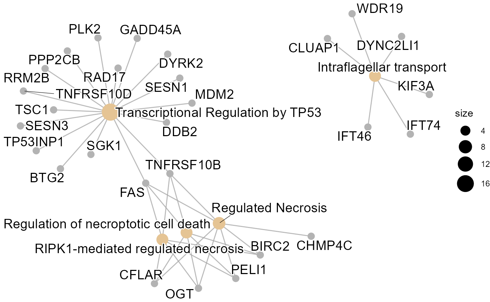
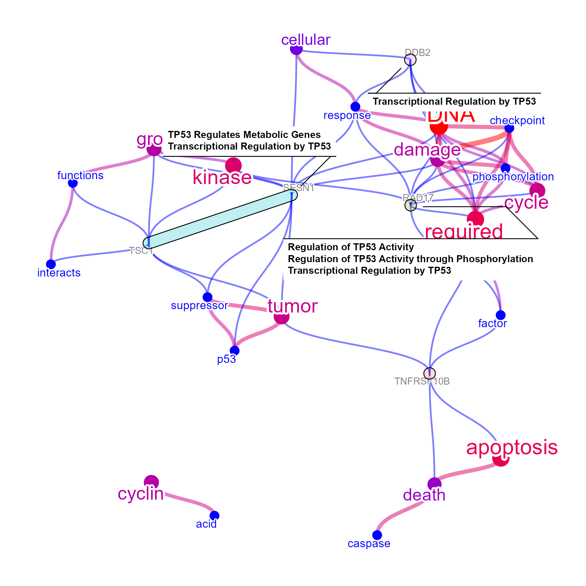
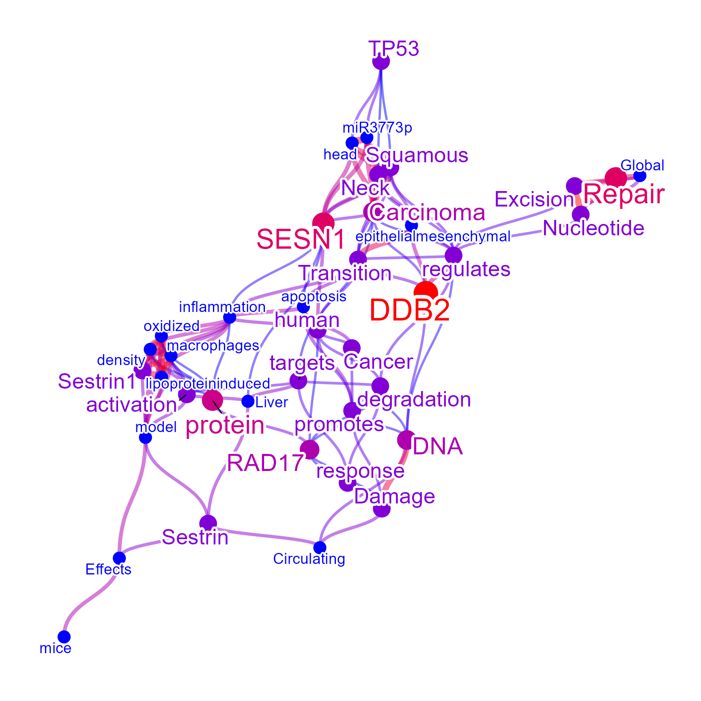
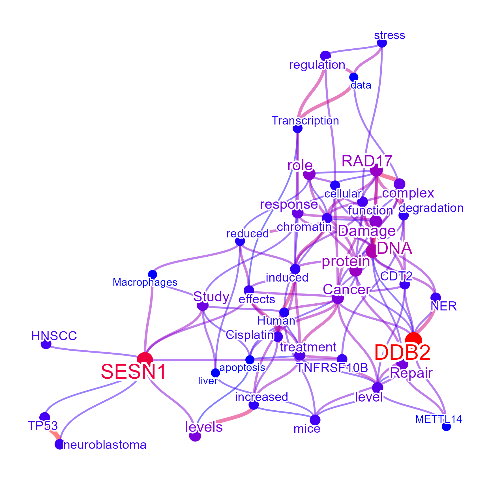
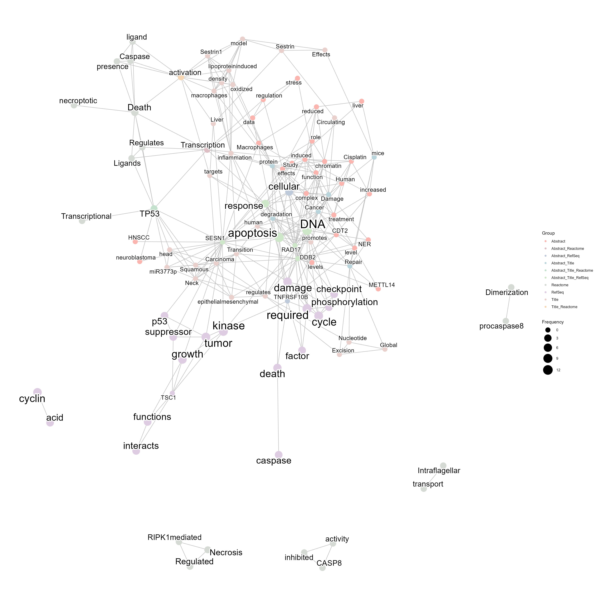
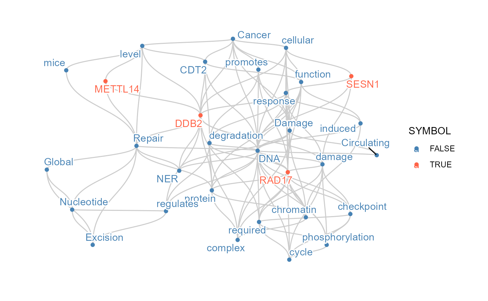
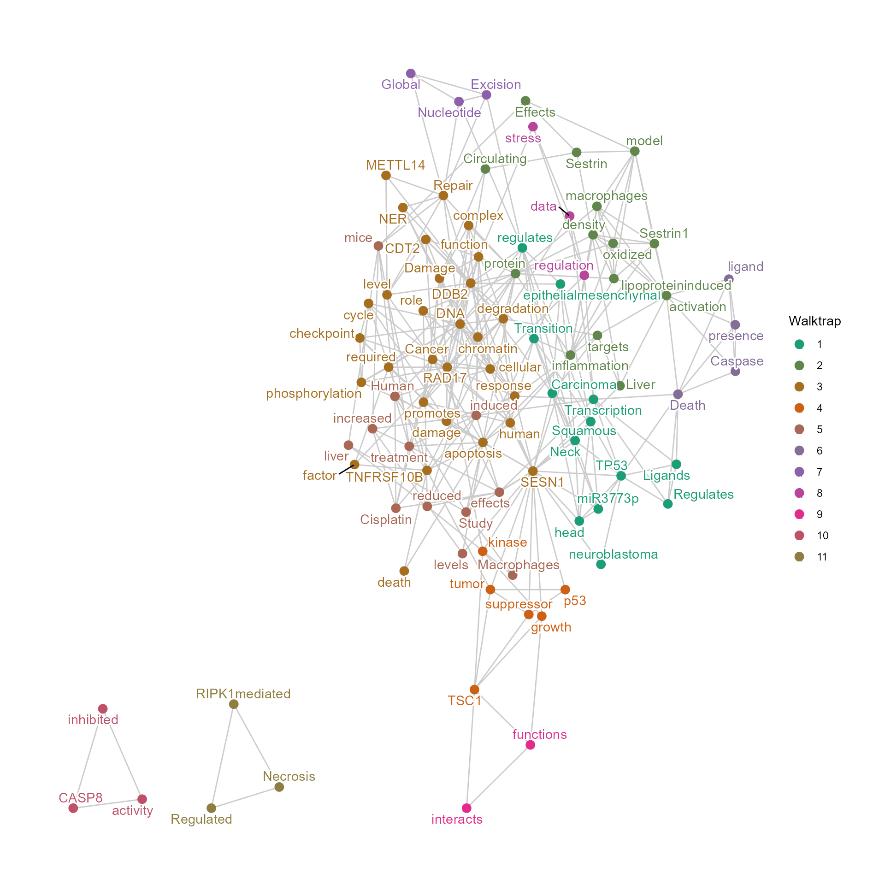
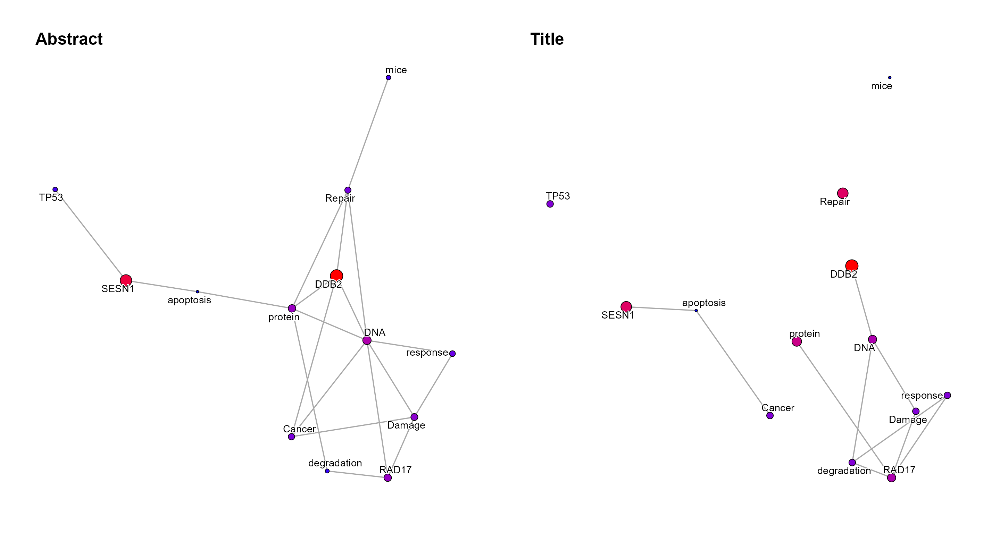

Application example
Noriaki Sato
application_example_BKPyV.RmdApplication examples
We demonstrate an use case of the package, which investigates transcriptomic changes induced by BK polyomavirus (BKPyV) infection in renal proximal tubular epithelial cells (Assetta et al. 2016). Differentially expressed mRNAs in 3 days post-infection were obtained, and down-regulated mRNAs in BKPyV infected cells were examined.
Load the necessary packages and genes
library(wcGeneSummary)
library(org.Hs.eg.db)
library(ggplot2)
library(ReactomePA);library(clusterProfiler)
library(ggraph);library(igraph)
library(ggforce) ## For genePathPlot
degs <- wcGeneSummary:::d3degDownAssetta2016
length(degs)## [1] 191
degs## [1] "ABCB4" "ABCB7" "AKTIP" "ALS2"
## [5] "ANKRA2" "ANTXR1" "APH1B" "ARHGEF28"
## [9] "ARNTL" "ATMIN" "BDH2" "BIRC2"
## [13] "BTG1" "BTG2" "C4A" "C7orf60"
## [17] "C8orf4" "CALCOCO1" "CAPRIN2" "CARS"
## [21] "CBLB" "CCNDBP1" "CCNG2" "CCZ1B"
## [25] "CDC42EP3" "CDH6" "CFLAR" "CHMP1B"
## [29] "CHMP4C" "CLUAP1" "COG2" "COG3"
## [33] "CPQ" "CROT" "CTTNBP2NL" "CYP4V2"
## [37] "DAB2" "DDB2" "DDX17" "DDX5"
## [41] "DGKA" "DHX32" "DLG1" "DYNC2LI1"
## [45] "DYRK2" "EFHC1" "EIF4A2" "ERMAP"
## [49] "ERMARD" "EXOC1" "FAM134B" "FAM160B1"
## [53] "FAM21C" "FAM84B" "FANK1" "FAS"
## [57] "FBXO38" "FCHO2" "FGD6" "FLJ22447"
## [61] "FMNL2" "GADD45A" "GJA1" "GLIDR"
## [65] "GLT8D1" "GOPC" "GPBP1L1" "GPR155"
## [69] "GPR75-ASB3" "GRAMD3" "HADHB" "HCG11"
## [73] "HDAC9" "HDHD2" "HERPUD1" "HSDL2"
## [77] "ICA1" "ICK" "IFNGR1" "IFT46"
## [81] "IFT74" "IRF6" "ITGA2" "ITGA6"
## [85] "ITGAV" "ITGB6" "KDM5B" "KIF3A"
## [89] "KIF5B" "KLHL20" "KLHL24" "KLHL9"
## [93] "KPNA5" "KRCC1" "L3MBTL3" "LINC00657"
## [97] "LOC100131564" "LZTFL1" "MAMDC2" "MAP4K5"
## [101] "MAT2B" "MBNL2" "MDM2" "MECOM"
## [105] "MFSD1" "MGEA5" "MICU3" "MSANTD4"
## [109] "NBPF11" "NCBP2" "NEAT1" "NTM"
## [113] "OGT" "PAFAH1B2" "PAFAH2" "PCMTD2"
## [117] "PDE4D" "PDP1" "PELI1" "PEX1"
## [121] "PHF14" "PHOSPHO2-KLHL23" "PIK3IP1" "PLA2R1"
## [125] "PLCB4" "PLK2" "POLI" "POSTN"
## [129] "PPAN-P2RY11" "PPFIBP1" "PPP2CB" "PRICKLE1"
## [133] "PROS1" "PSMD5-AS1" "RAD17" "RHOQ"
## [137] "RIMKLB" "RNA18S5" "RNF170" "RNF20"
## [141] "RNU1-28P" "RPL23AP53" "RRM2B" "RRN3"
## [145] "RRN3P1" "SEMA3C" "SERINC1" "SESN1"
## [149] "SESN3" "SGK1" "SLC22A5" "SLC37A3"
## [153] "SVIL" "SYT11" "TARSL2" "TBC1D19"
## [157] "TBCK" "TBRG1" "TGFA" "TGFB2"
## [161] "TIPARP" "TMEM136" "TNFRSF10B" "TNFRSF10D"
## [165] "TOM1L1" "TP53INP1" "TRIM13" "TRIM32"
## [169] "TRIM4" "TSC1" "TSPYL5" "UGT2B7"
## [173] "UNC13B" "UPRT" "VPS41" "VPS8"
## [177] "WDR11" "WDR19" "XPC" "YPEL2"
## [181] "ZC2HC1A" "ZFAND5" "ZFP90" "ZFR"
## [185] "ZMAT3" "ZNF12" "ZNF248" "ZNF322"
## [189] "ZNF561" "ZNF626" "ZSCAN30"Enrichment analysis
First, we perform enrichment analysis using ReactomePA. From the enrichment analysis results, the cluster is related to transcriptional regulation by TP53.
## Convert to ENTREZID
entre <- AnnotationDbi::select(org.Hs.eg.db, keytype="SYMBOL",
keys = degs, columns = "ENTREZID")$ENTREZID
pway <- setReadable(enrichPathway(entre), org.Hs.eg.db)
sigpway <- subset(pway@result, p.adjust<0.05)
sigpway$Description## [1] "Transcriptional Regulation by TP53"
## [2] "RIPK1-mediated regulated necrosis"
## [3] "Regulation of necroptotic cell death"
## [4] "Regulated Necrosis"
## [5] "Intraflagellar transport"
## [6] "Regulation by c-FLIP"
## [7] "CASP8 activity is inhibited"
## [8] "Dimerization of procaspase-8"
## [9] "TP53 Regulates Transcription of Death Receptors and Ligands"
## [10] "Caspase activation via Death Receptors in the presence of ligand"
## [11] "FOXO-mediated transcription of cell cycle genes"
## [12] "TP53 Regulates Transcription of Cell Death Genes"
## [13] "Cilium Assembly"
cnetplot(pway)
## Genes involved in significant pathways
excheck <- unlist(unique(sapply(sigpway$geneID,
function (x) strsplit(x,"/"))))
excheck## [1] "BTG2" "DDB2" "DYRK2" "FAS" "GADD45A" "MDM2"
## [7] "PLK2" "PPP2CB" "RAD17" "RRM2B" "SESN1" "SESN3"
## [13] "SGK1" "TNFRSF10B" "TNFRSF10D" "TP53INP1" "TSC1" "BIRC2"
## [19] "CFLAR" "FAS" "OGT" "PELI1" "TNFRSF10B" "BIRC2"
## [25] "CFLAR" "CHMP4C" "FAS" "OGT" "PELI1" "TNFRSF10B"
## [31] "CLUAP1" "DYNC2LI1" "IFT46" "IFT74" "KIF3A" "WDR19"
## [37] "CFLAR" "FAS" "TNFRSF10B" "FAS" "TNFRSF10B" "TNFRSF10D"
## [43] "BTG1" "CCNG2" "GADD45A" "FAS" "TNFRSF10B" "TNFRSF10D"
## [49] "TP53INP1" "CLUAP1" "DYNC2LI1" "EXOC1" "IFT46" "IFT74"
## [55] "KIF3A" "LZTFL1" "WDR19"We store the name of enriched pathways in the network for the downstream analysis.
netreac <- wcGeneSummary(degs,
enrich="reactome",
plotType="network",
numWords=50,
colorText=TRUE)## input genes: 191## 'select()' returned 1:1 mapping between keys and columns## converted input genes: 174
## filtered 61 words (frequency and/or tfidf) ...
## performing enrichment analysis ...Text mining the gene summaries
Next we perform the plain function producing a correlation network, with showing the top-genes related to high-frequency words in the text in RefSeq summary. We obtained the list of these genes from geneCount slot.
net1 <- wcGeneSummary(excheck,
plotType="network",
colorText=TRUE,
numWords=30,
corThresh=0.5,
genePlot=TRUE,
genePlotNum=5,
edgeLink=FALSE,
genePathPlot="reactome")## input genes: 57
## converted input genes: 57
## filtered 61 words (frequency and/or tfidf) ...
## found 28 enriched term ...
net1@net
net1@geneCount##
## RAD17 SESN1 TSC1 DDB2 TNFRSF10B BTG1 DYRK2 BIRC2
## 9 9 6 5 5 4 4 3
## CCNG2 FAS GADD45A LZTFL1 MDM2 SESN3 SGK1 CFLAR
## 3 3 3 3 3 3 3 2
## CHMP4C OGT TNFRSF10D WDR19 BTG2 DYNC2LI1 EXOC1 IFT74
## 2 2 2 2 1 1 1 1
## PPP2CB RRM2B
## 1 1
top <- names(net1@geneCount[net1@geneCount>=5])
top## [1] "RAD17" "SESN1" "TSC1" "DDB2" "TNFRSF10B"Text mining the available literature
These genes are further queried for PubMed information. First, show the network for the article titles.
titlenet <- wcAbst(top,
sortOrder="relevance",
target="title",
plotType="network",
colorText=TRUE,
madeUpperGenes=FALSE,
corThresh=0.2,
preset=TRUE,
retMax=40,
numWords=40,
edgeLink=FALSE)## Proceeding without API key
titlenet@net
Obtain and show the network for the article abstract.
abstnet <- wcAbst(top,
target="abstract",
plotType="network",
colorText=TRUE,
madeUpperGenes=FALSE,
corThresh=0.2,
preset=TRUE,
retMax=40,
numWords=40,
edgeLink=FALSE)## Proceeding without API key
abstnet@net
Combine and compare networks
From the RefSeq summary and articles related to important genes, the cluster could have functionality of DNA damage response, which is also upregulated by BKPyV infection. These networks can be combined to find intersections and differences. We can see that in addition to Reactome pathway names, plenty of information could be obtained and summarized by querying other databases, which could aid in interpreting clusters of genes and hypothesis generation.
compareWordNet(list(abstnet, titlenet, netreac, net1),
titles=c("Abstract","Title","Reactome","RefSeq"))## Warning in RColorBrewer::brewer.pal(catNum, colPal): n too large, allowed maximum for palette Pastel1 is 9
## Returning the palette you asked for with that many colors## Scale for colour is already present.
## Adding another scale for colour, which will replace the existing scale.
From the network, DNA damage repair pathway, especially nucleotide excision repair related to DDB2, METTL14,and RAD17 might be related to BKPyV infection, which cannot be prioritize based on log2FoldChange or enrichment analysis.
conet <- compareWordNet(list(netreac,
net1,
titlenet,
abstnet),
returnNet = TRUE)
ddrNms <- NULL
for (nm in names(V(conet))) {
if (tolower(nm) %in% c("dna","damage","repair")) {
ddrNms <- c(ddrNms, names(neighbors(conet, nm)))
}
}
ddrNms## [1] "checkpoint" "cycle" "DNA" "phosphorylation"
## [5] "required" "response" "DDB2" "SESN1"
## [9] "RAD17" "cellular" "checkpoint" "cycle"
## [13] "damage" "phosphorylation" "required" "response"
## [17] "DDB2" "SESN1" "RAD17" "Cancer"
## [21] "Circulating" "Damage" "degradation" "promotes"
## [25] "protein" "regulates" "Repair" "CDT2"
## [29] "chromatin" "complex" "function" "induced"
## [33] "NER" "cellular" "DNA" "response"
## [37] "RAD17" "Cancer" "Circulating" "promotes"
## [41] "chromatin" "complex" "function" "NER"
## [45] "DNA" "DDB2" "Excision" "Global"
## [49] "mice" "Nucleotide" "protein" "level"
## [53] "METTL14" "NER"
ddrRelated <- induced.subgraph(conet,
names(V(conet)) %in% unique(ddrNms))
V(ddrRelated)$SYMBOL <- names(V(ddrRelated)) %in% keys(org.Hs.eg.db,"SYMBOL")
ggraph(ddrRelated)+
geom_edge_diagonal2(color="grey80")+
geom_node_point(aes(color=SYMBOL))+
geom_node_text(aes(label=name, color=SYMBOL),check_overlap=TRUE, repel=TRUE,
bg.color = "white", segment.color="black",
bg.r = .15)+
scale_color_manual(values=c("steelblue","tomato"))+
theme_graph()## Using "stress" as default layout## Warning: Using the `size` aesthetic in this geom was deprecated in ggplot2 3.4.0.
## ℹ Please use `linewidth` in the `default_aes` field and elsewhere instead.
The network can be obtained by returnNet=TRUE, which can
be used for downstream analysis like assessment of degrees and community
detection.
## SESN1 DNA RAD17 DDB2 protein Cancer
## 25 24 19 16 15 14
## apoptosis activation response degradation TP53 cellular
## 13 12 12 12 11 11
## Damage Carcinoma inflammation
## 11 10 10
conet <- induced_subgraph(conet, conetDeg>1)
wt <- igraph::walktrap.community(conet)
igraph::V(conet)$walktrap <- wt$membership
pal <- RColorBrewer::brewer.pal(length(unique(wt$membership)),
"Dark2") ## Warning in RColorBrewer::brewer.pal(length(unique(wt$membership)), "Dark2"): n too large, allowed maximum for palette Dark2 is 8
## Returning the palette you asked for with that many colors
pal <- colorRampPalette(pal)(20)
ggraph(conet)+
geom_edge_link(color="grey80")+
geom_node_point(aes(color=factor(walktrap)), size=3)+
geom_node_text(aes(label=name, color=factor(walktrap)),
check_overlap=TRUE, repel=TRUE,
bg.color = "white", segment.color="black",
bg.r = .15)+
scale_color_manual(values=pal,
name="Walktrap")+
theme_graph()## Using "stress" as default layout
Dynamic layout can be also used to compare the networks, by
graphlayouts, for comparing the multiple graphs, especially
useful for time-series analysis. See the documentation of layout_as_dynamic
for specifying the alpha, which is default to 0.5.
library(igraph)
dyn <- plotDynamic(list(abstnet, titlenet), concat="intersection",
titles=c("Abstract","Title"), alpha=0.8)
dyn
## R version 4.2.2 (2022-10-31 ucrt)
## Platform: x86_64-w64-mingw32/x64 (64-bit)
## Running under: Windows 10 x64 (build 19044)
##
## Matrix products: default
##
## locale:
## [1] LC_COLLATE=Japanese_Japan.utf8 LC_CTYPE=Japanese_Japan.utf8
## [3] LC_MONETARY=Japanese_Japan.utf8 LC_NUMERIC=C
## [5] LC_TIME=Japanese_Japan.utf8
##
## attached base packages:
## [1] stats4 stats graphics grDevices utils datasets methods
## [8] base
##
## other attached packages:
## [1] ggforce_0.4.1 igraph_1.3.5 ggraph_2.1.0
## [4] clusterProfiler_4.6.0 ReactomePA_1.42.0 ggplot2_3.4.0
## [7] org.Hs.eg.db_3.16.0 AnnotationDbi_1.60.0 IRanges_2.32.0
## [10] S4Vectors_0.36.1 Biobase_2.58.0 BiocGenerics_0.44.0
## [13] wcGeneSummary_0.99.0 BiocStyle_2.26.0
##
## loaded via a namespace (and not attached):
## [1] shadowtext_0.1.2 fastmatch_1.1-3 systemfonts_1.0.4
## [4] plyr_1.8.8 lazyeval_0.2.2 splines_4.2.2
## [7] BiocParallel_1.32.5 GenomeInfoDb_1.34.6 digest_0.6.31
## [10] yulab.utils_0.0.6 htmltools_0.5.4 bugsigdbr_1.4.1
## [13] GOSemSim_2.24.0 viridis_0.6.2 GO.db_3.16.0
## [16] fansi_1.0.3 GeneSummary_0.99.4 magrittr_2.0.3
## [19] memoise_2.0.1 tm_0.7-10 Biostrings_2.66.0
## [22] graphlayouts_0.8.4 pvclust_2.2-0 wordcloud_2.6
## [25] pkgdown_2.0.7 enrichplot_1.18.3 colorspace_2.0-3
## [28] rappdirs_0.3.3 blob_1.2.3 ggrepel_0.9.2
## [31] textshaping_0.3.6 xfun_0.36 dplyr_1.0.99.9000
## [34] crayon_1.5.2 RCurl_1.98-1.9 jsonlite_1.8.4
## [37] scatterpie_0.1.8 graph_1.76.0 ape_5.6-2
## [40] glue_1.6.2 polyclip_1.10-4 stopwords_2.3
## [43] gtable_0.3.1 zlibbioc_1.44.0 XVector_0.38.0
## [46] GetoptLong_1.0.5 graphite_1.44.0 rentrez_1.2.3
## [49] scales_1.2.1 DOSE_3.24.2 DBI_1.1.3
## [52] Rcpp_1.0.9 viridisLite_0.4.1 xtable_1.8-4
## [55] tidytree_0.4.2 gridGraphics_0.5-1 reactome.db_1.82.0
## [58] bit_4.0.5 htmlwidgets_1.6.1 httr_1.4.4
## [61] fgsea_1.24.0 RColorBrewer_1.1-3 ellipsis_0.3.2
## [64] pkgconfig_2.0.3 XML_3.99-0.13 farver_2.1.1
## [67] sass_0.4.4 utf8_1.2.2 labeling_0.4.2
## [70] reshape2_1.4.4 ggplotify_0.1.0 tidyselect_1.2.0
## [73] rlang_1.0.6 later_1.3.0 munsell_0.5.0
## [76] tools_4.2.2 cachem_1.0.6 downloader_0.4
## [79] cli_3.6.0 generics_0.1.3 RSQLite_2.2.20
## [82] gson_0.0.9 evaluate_0.19 stringr_1.5.0
## [85] fastmap_1.1.0 ggdendro_0.1.23 yaml_2.3.6
## [88] ragg_1.2.5 ggtree_3.6.2 knitr_1.41
## [91] bit64_4.0.5 fs_1.5.2 tidygraph_1.2.2
## [94] purrr_1.0.1 KEGGREST_1.38.0 dendextend_1.16.0
## [97] nlme_3.1-161 mime_0.12 slam_0.1-50
## [100] aplot_0.1.9 xml2_1.3.3 compiler_4.2.2
## [103] rstudioapi_0.14 curl_5.0.0 png_0.1-8
## [106] treeio_1.22.0 tibble_3.1.8 tweenr_2.0.2
## [109] bslib_0.4.2 stringi_1.7.12 cyjShiny_1.0.34
## [112] highr_0.10 desc_1.4.2 lattice_0.20-45
## [115] Matrix_1.5-3 vctrs_0.5.1 pillar_1.8.1
## [118] lifecycle_1.0.3 BiocManager_1.30.19 jquerylib_0.1.4
## [121] GlobalOptions_0.1.2 data.table_1.14.6 cowplot_1.1.1
## [124] bitops_1.0-7 httpuv_1.6.8 patchwork_1.1.2
## [127] qvalue_2.30.0 R6_2.5.1 bookdown_0.31
## [130] promises_1.2.0.1 gridExtra_2.3 codetools_0.2-18
## [133] MASS_7.3-58.1 rprojroot_2.0.3 rjson_0.2.21
## [136] withr_2.5.0 GenomeInfoDbData_1.2.9 parallel_4.2.2
## [139] ISOcodes_2022.09.29 ggfun_0.0.9 grid_4.2.2
## [142] tidyr_1.2.1 HDO.db_0.99.1 rmarkdown_2.19
## [145] NLP_0.2-1 shiny_1.7.4 base64enc_0.1-3